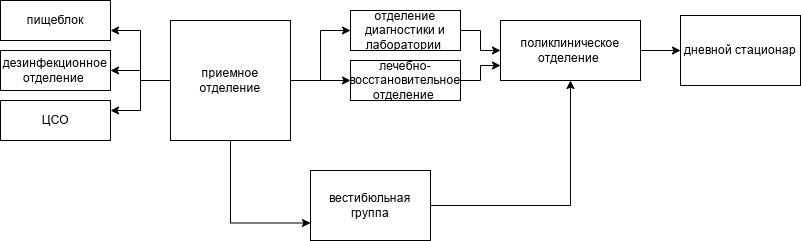

16 февраля 2026
ответ модели: топ-2 предсказаний: Вопрос пользователя: Сколько ждать мой заказ? Найден FAQ-вопрос: Как быстро доставляется заказ? (sim=0.706) Ответ бот-FAQ: Наш стандартный срок доставки — 3–5 рабочих дней. топ-2 предсказаний: Вопрос пользователя: Как оплатить заказ? Найден FAQ-вопрос: Как оплатить заказ? (sim=0.941) Ответ бот-FAQ: Оплата возможна через банковскую карту, PayPal или наличными при получении. Нажмите, чтобы скачать или открыть презентацию: Презентация в формате .pptx Нажмите, чтобы скачать или открыть index.htrl: Файл проверки работы с кириллицей .html 9567 + 1085 = 10652 Расшифровка букв: {'S': 9, 'E': 5, 'N': 6, 'D': 7, 'M': 1, 'O': 0, 'R': 8, 'Y': 2}25 февраля 2026
0.004166666666666667 4.166666666666667 4.17 -0.0033333333333329662 3333.3333333329660. 0.008000000000000007 Честное округление (Random Error): 4.162 -> 4.16 (остаток: +0.00200) 4.168 -> 4.17 (остаток: -0.00200) 4.174 -> 4.17 (остаток: +0.00400) 4.179 -> 4.18 (остаток: -0.00100) Усечение / Truncation (Systematic Bias): 4.162 -> 4.16 (остаток: +0.00200) 4.168 -> 4.16 (остаток: +0.00800) 4.174 -> 4.17 (остаток: +0.00400) 4.179 -> 4.17 (остаток: +0.00900)7 марта 2026
18 марта 2026
Студент занимался 5 часов Прогноз баллов: 50.2321 марта 2026
0.69 Точность модели КАСКО: 100.00%23 марта 2026
Ошибка на обучении (MSE): 0.022068182641384715 Ошибка на тесте (MSE): 0.027703295578209542 Итоговые результаты: Ошибка на обучении (MSE): 0.0041 Ошибка на тесте (MSE): 0.0042 нейросеть не интерпритируема на человеческом уровне31 марта 2026
Нажмите, чтобы скачать или открыть изображение:
Список - простота, но сложная навигация Массив - эффективен для числовых операций Словарь - наиболее удобен для иерархических данных с именованными ключами